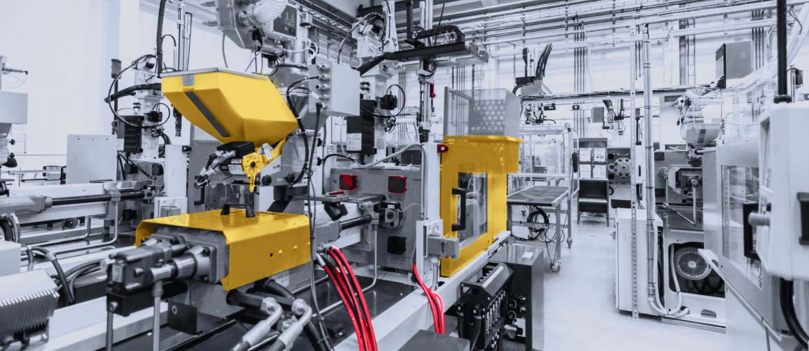

1
Map support flow
Trace one shop visit from induction to close, including findings, deviations, customer updates, and owner handoffs.
Proposal brief for Stacy Kuperus
FTAI's MRE model depends on clear shop status, clean support data, and fast customer updates across teams, shops, vendors, and customers during each engine maintenance event.
Why we're here: saw FTAI is hiring a Customer Support Engineer in Montreal. That points to more shop visit status work, technical updates, and customer coordination across the MRO network.
The hiring signal says FTAI is scaling customer support around engine maintenance events. Each shop visit creates status checks, findings, scope changes, and customer questions. When those updates sit across documents, email, and partner systems, support engineers spend time chasing facts. That slows clear customer updates and can pull senior people into daily follow-up. The first win is cleaner workflow, not more headcount.
We would start with a dedicated squad under FTAI's operations owner for a six-week pilot.
Trace one shop visit from induction to close, including findings, deviations, customer updates, and owner handoffs.
Find duplicate fields across spreadsheets, documents, and partner updates, then define one status model for support.
Ship one reporting or integration slice that turns maintenance progress into clearer customer-ready weekly updates.
Add automated checks for recurring support outputs, so scope changes and missing values are caught earlier.
Elinext is a full-cycle software development company, founded in 1997. We have about 700 in-house specialists, with no freelancers or subcontractors. For FTAI, the fit is enterprise support software, QA, DevOps, Java, .NET, and React work. We hold ISO 9001 and ISO 27001 certifications for quality and security. Our named clients include Siemens, Broadcom, Volkswagen, TRUMPF, and TUI. The same dedicated-team model can support the pilot above without slowing FTAI teams.

Elinext helped modernize and support a manufacturing platform built in the late 1990s. The work grew into ongoing support teams.
Read case study
Elinext built and supported logistics services with Java, .NET, Android, QA, and monitoring. The work cut manual status effort.
Read case study